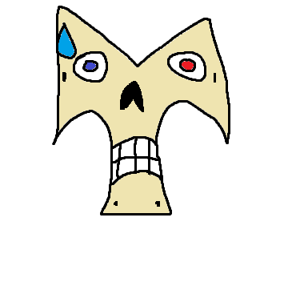

ВНИМАНИЕ: СТРАНИЦА УДАЛЕНА
Доступ к данным ограничен.

Ошибка 404: Данные не найдены
ПОДКЛЮЧЕНИЕ К СЕРВЕРУ... УСПЕШНО.
ИЗВЛЕЧЕНИЕ ПАКЕТОВ ДАННЫХ... ГОТОВО.
— город затих
— маяки не отвечают
— стоит ли обращаться к Маякистору?
— он уже не поможет
— думаешь?
— эй?
—